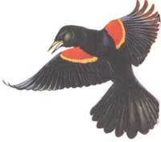
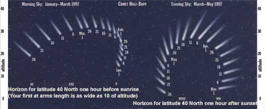

SEASONS
The approach of a splendidly bright Mars heralds a new season.
The most dependable yet fairly infrequent astronomical sight of the next few months is not the fickle and very rare comet that we discussed last issue, but our nearest planetary neighbor, Mars.
Mars made headlines a few months back when several scientists announced that they may have found ancient fossils of something like bacteria - Martian bacteria - in a meteorite believed to have come from Mars. In my column in the next issue I'll discuss that amazing topic of life on Mars (the planet will still be fairly bright and easily found in the evening sky in April and May). But right now I want to describe Mars' current rise to peak brightness and its passage closer to us than it has come for several years.
As February begins, you still have to wait until around mid-evening before Mars rises. But there is no mistaking it once it comes up in the east. Mars is known as "the red planet," and although its color is really more like the orange-gold of fire, this hue becomes quite distinctive when Mars approaches earth and brightens dramatically. This is exactly what is happening in February and March 1997. By March, Mars easily outshines every other point of light in the evening sky except for the single brightest star, Sirius. Sirius is in the south on February evenings and southwest on March evenings, whereas Mars is in the east and southeast at these times. But it is easy to tell them apart because Sirius twinkles (sometimes in lovely glints of different colors) and is predominantly bluish-white, while Mars stares steadily (hardly any twinkling) at us with its orange light.
On March 17, Mars reaches what astronomers call "opposition." This is where a planet appears opposite to the sun's position in the sky: The planet rises at sunset and is visible all night long. It is also around the time of opposition that a planet gets closest to earth, and therefore brightest and biggest-looking in telescopes.
If you have a small telescope, try looking at Mars on different nights, when the planet is rather high above your horizon. Although this year's close approach of Mars brings it slightly nearer than it has been at any time since 1993, it is not one of the thrilling, really close encounters. On March 20, Mars still lies a full 61 million miles from earth, so the globe of Mars will still look small in your telescope. But you may eventually see a few white and gray or green surface features on that ochre globe!
By the start of February we should know whether Comet Hale-Bopp is brightening enough to become one of the great comets of this century, or even of history. Go out and look in the due east about one hour before sunrise (or a bit earlier) in early February. If you cannot find the comet easily with the naked eye in a clear sky from the country, or identify it as a strange object with
a tail in binoculars from the city, then Hale-Bopp is unlikely to become a stunning naked-eye sight even at its best in March and April. On the other hand, if the comet and at least a short tuft of its tail are evident at a glance on early February dawns, then we are likely to be in for the show of a lifetime in March and April.
Many people will not be eager to go outside before daybreak in freezing February unless the comet is truly spectacular. But as warmer March comes, the comet should not only brighten from whatever its February levels were and continue to be visible at dawn but also do exactly what we'd most want it to domove over to the evening sky. In the second half of March, observers in the U.S. will be able to see Hale-Bopp at both dusk and dawn. Observers farther north - in Canada and the northernmost U.S. - will actually see the comet skirt along the northern horizon through the middle of the night and remain visible all night long.
The final 10 days of March will be the most eventful time for the comet. Hale-Bopp is closest to earth on March 22 and closest to the sun on March 31. The comet will start appearing higher in the sky at dusk than it does at dawn at just the right date - around the time that the bright moon is vacating the evening sky and moving to the morning sky. And, as noted above, many people in North America will get to see the comet while the full moon is in eclipse on the evening of March 23.
What will Comet Hale-Bopp look like at its best, which is likely to be in those final days of March? When closest, this comet comes no nearer than about 122 million miles from Earth-about 13 times farther than last year's impressive Comet Hyakutake. But as I write these words experts still think that Hale-Bopp is so large and active that it may shine as bright or brighter than Hyakutake and, unlike Hyakutake, maintain that brightness level for weeks, not only days. Hale-Bopp has far more dust, too, and that means it is likely to sport a much brighter, denser tail than Hyakutake. It's always possible, by the way, that Hale-Bopp could undergo dramatic flares in brightness. It might grow twice as bright or even brighter, literally overnight. So don't give up on this comet too easily. Whatever else it does, we're sure it will offer many surprises.
One of the most abundant birds in North America also serves as one of our first great signs that spring is near. The only catch is that you probably won't see this bird in your yard, but rather in some local freshwater marsh or field. Its territories are so small - as small as just a few feet across - that hundreds may live in or around a relatively small field or pond. The bird I'm speaking of is one of our most striking: the red-winged blackbird.
Actually it is only the male bird which has a spectacular and distinctive appearance. The non-descript female is a brownish color, with thick but dull streaks on her breast. The male is all black save for a large red patch on the shoulder that is bordered on the bottom with a stripe of yellow. Sometimes only the yellow is seen, but when the male bird is flying or making a display the flash of the red part of its "epaulet" (the shoulder decoration on a uniform) is stunning.
Many of these birds are winter residents far north in the U.S. But in late February in much of the country, the wintering males head back to their nesting grounds and are joined by returning migrant males. The females usually show up a few weeks later. When you go out in late winter to your local meadow or marsh, perhaps with snow and ice still on the ground, you'll see numerous male redwinged blackbirds flashing and singing their loud "o-ka-LAYYY," letting you know that spring is near.
What's another sign that spring is coming? Seeing one of the "Seven Sleepers" up and about. There is an ancient legend of the Seven Sleepers, but, according to Mary Blocksma's fine book Naming Nature, this is a title also given to the seven mammals of North America that hibernate for much of the winter. They are bats, bears, chipmunks, jumping mice, raccoons, skunks, and woodchucks. Of these, raccoons and chipmunks might only really sleep for a few weeks at a time - you might see them out on a warm winter night or day. But at least in the northern U.S. (where winters can be quite hard), chipmunks, raccoons, and skunks are usually up for good by the end of February, while the other four "Sleepers" continue to hibernate into March.
Timetable for Lunar Eclipse of March 23-24,1997 (EST)
(For Central, Mountain, and Pacific Time Zones, subtract 1, 2,and 3 hours from times, respectively)
Earth's outer shadow first dimly visible on moon . . . . . . . . . . . . . . . .about 9:15 P.M. EST
Earth's central shadow first touches moon (lower left edge of moon) . . . . . . . . . .9:58 P.M.
Maximum eclipse . . . . . . . . . . . . . . . . . . . . . . . . . . . . . . . . . . . . . . . . . . . . . .11:39 P.M.
Earth's central shadow last touches moon (right edge of moon) . . . . . . . . . . . . .1:22 A.M.
Earth's outer shadow last dimly visible on moon . . . . . . . . . . . . . . . . . . . . . .about 2 A.M.
Last year, the U.S. experienced two total eclipses of the moon. Unfortunately, the first was visible in large part only in the east, and the second was clouded out in much of the country. There are no more total lunar eclipses due for North America until the year 2000. But, on the night of March 23-24, 1997, there will be a partial lunar eclipse across the entire continent in which the earth's central shadow extends up to 92 percent of the way across the moon's face. That should be enough for the moon to get much darker and show much of the typically reddish color it does during total eclipse. The darkened night will also allow country viewers to see a multitude of stars, and will provide a much better view of Comet Hale-Bopp in the northwest sky for many observers. The times of the eclipse's major stages are presented in the accompanying table. At mid-eclipse, at 11:39 P.M., only a tiny slice of the moon's upper left edge will be outside of earth's central shadow.
February
2 Groundhog Day; Candlemas (feast of the Purification of Mary).
3 Miami dipped to 27° F. on this day in 1917.
5 Halfway point of winter; Venus-Jupiter conjunction very low in east-southeast about 30 - 45 minutes before sunrise (Venus brighter than Jupiter) - binoculars help view.
6 Queen Elizabeth II's Ascension Day in 1952; Mars halts its eastward movement relative to the stars and begins retrograde motion.
7 Chinese New Year (Year 4695-Year of the Ox); NEW MOON, 10:06 A.M. EST; moon at closest to earth for 1997.
8 Charleston and Savannah hit 0° F. on this day in 1835.
9 Battle of the ironclad ships Monitor and Merrimac on this day in 1862.
10 Moon near Saturn this evening.
11 Shrove Tuesday, and Mardi Gras.
12 Lincoln's Birthday (1809); Ash Wednesday; Jupiter-Mercury conjunction very low in east-southeast about 30-45 minutes before sunrise (Jupiter is the brighter) - binoculars help view.
14 Valentine's Day; FIRST QUARTER MOON, 3:57 A.M. EST.
16 Sun enters the constellation Aquarius; Jupiter very near Uranus at dawn, but bright sky may prevent Uranus from being visible even in telescopes.
17 Presidents Day.
18 San Francisco temperature soared to 80° F. on this day in 1899; Old Forge, N.Y. hit 52° below zero this day in 1979; sun enters astrological sign Pisces.
19 Approximately last morning this month to see Comet Hale - Bopp just before dawn without interference from bright moonlight.
22 George Washington's Birthday (1732); FULL MOON, 5:27 A.M. EST - the third and final phase of month (no Last Quarter).
25 Moon near Mars before dawn.
March
1 In 1914, the worst blizzard in New York and New Jersey since 1888- N.Y. barometer fell to 28.38 inches.
2 Texas Independence Day; LAST QUARTER MOON, 4:37 A.M. EST (first of two Last Quarter Moons this month).
3 Comet Hale-Bopp 46° due north of the sun; International Comet Hale-Bopp Day (worldwide effort to coordinate observations of the comet): period three from now until April 12.
5 Great coastal storm ravaged east coast from March 5-9, 1962, with 30 foot waves at shore and 42 inches or snow in mountains of Virginia.
6 Moon near Jupiter this morning.
8 NEW MOON, 8:15 P.M. EST; total eclipse of the sun visible from parts of Asia - Comet Hale-Bopp may be bright enough to be seen during this eclipse.
9 Comet Hale-Bopp one a.u. (one earth-to-sun distance, about 93 million miles) from Sun and closing; look for very thin moon low in west about 30 minutes after sunset.
11 Sun enters the constellation Pisces; Mercury at conjunction on far side of sun.
15 Andrew Jackson Day (in Tennessee); FIRST QUARTER MOON, 7:06 P.M. EST; the Ides of March (when Julius Caesar was assassinated in 44 B.C.).
17 St. Patrick's Day; Mars at opposition (visible all night) and brightest (see text).
19 The swallows return to San Juan Capistrano in California.
20 Spring equinox (start of spring), 8:56 A.M. EST; sun enters astrological sign Aries.
21 Comet Hale-Bopp equally high at dusk and dawn for observers near 40° North latitude.
22 Moon rises, with Mars not too far to its lower left; Hale-Bopp nearest to earth but still about 122 million miles distant.
23 Palm Sunday; FULL MOON, 11:45 P.M. EST; large partial eclipse of the moon, with Mars not far above the moon at rising time (nightfall) and Comet Hale-Bopp sinking in the northwest for much of the U.S. (see text).
24 Comet Hale-Bopp passing just north of the Great Galaxy in Andromeda these next few nights.
25 Annunciation (Lady Day).
27 Predicted date for peak brightness of Comet Hale-Bopp.
28 Good Friday.
29 Mercury begins coming into view at dusk low in western sky.
30 Easter; Saturn in conjunction with the sun.
31 LAST QUARTER (second of two this month), 2:38 P.M. EST; this evening Hale-Bopp reaches its closest to the sun ("perihelion"), about 85 million miles from the sun.
|
 Ken Lin Comet Chart: |
 Grizzly bear after winter's nap. |
|